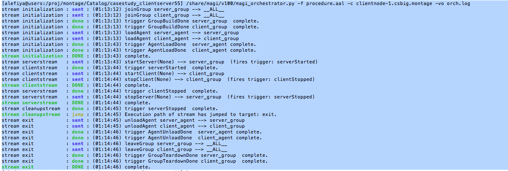
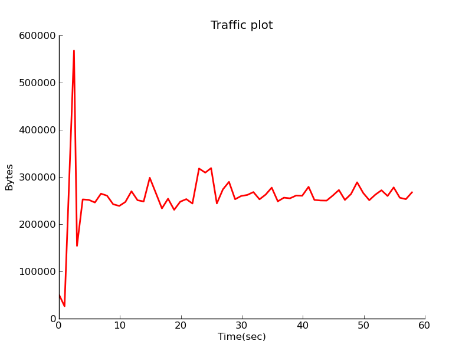

Scaled Client Server Case Study
In this example we demonstrate how to set up client server traffic generators in a larger topology.
This case study is identical to Simple Client Case Study except the topology is significantly larger.
Event Streams
As in the simpler case, this example has three events streams; the server stream, the client stream, and the cleanup stream.
Mapping to the Topology
The groups directive in the AAL file allows mapping an agent behavior to one or more nodes.
groups:
client_group: [clientnode-1, clientnode-2, clientnode-3, clientnode-4, clientnode-5,
clientnode-6, clientnode-7, clientnode-8, clientnode-9, clientnode-10,
clientnode-11, clientnode-12, clientnode-13, clientnode-14, clientnode-15,
clientnode-16, clientnode-17, clientnode-18, clientnode-19, clientnode-20,
clientnode-21, clientnode-22, clientnode-23, clientnode-24, clientnode-25,
clientnode-26, clientnode-27, clientnode-28, clientnode-29, clientnode-30,
clientnode-31, clientnode-32, clientnode-33, clientnode-34, clientnode-35,
clientnode-36, clientnode-37, clientnode-38, clientnode-39, clientnode-40,
clientnode-41, clientnode-42, clientnode-43, clientnode-44, clientnode-45,
clientnode-46, clientnode-47, clientnode-48, clientnode-49, clientnode-50 ]
server_group: &slist [ servernode-1, servernode-2, servernode-3, servernode-4, servernode-5 ]
In this example, we observe that there are two groups: client_group which consists of all 50 clientnodes, and server_group which consists of 5 servernodes.
Additionally, we use YAML pointers to annotate the server_group as slist. The slist annotation is used to refer to the list of servers for configuring the client_agent in the section below.
Configuring the Agents
There are two types of agents, a client_agent and a server_agent. Each agent description consists of at least three directives; group, path and execargs.
group: indicates the set of nodes that the client_agent should be deployed on.path: indicates the path to the agent code (also called an agent module).execargs: can be used to parameterize the agents at load time. The agents may be reconfigured later in the AAL also using thesetConfigurationmethod.
agents:
client_agent:
group: client_group
path: /share/magi/modules/http_client/http_client.tar.gz
execargs: {servers: *slist, interval: '5', sizes: 'minmax(1000,10000)'}
server_agent:
group: server_group
path: /share/magi/modules/apache/apache.tar.gz
execargs: []
Server Stream
The server event stream consists of three states.
- The start state which generates a trigger, called
serverStarted, once all the server agents are activated on the experiment nodes. - It then enters the wait state where it waits for a trigger from the client event stream.
- Once the trigger is received, it enters the stop state, where the server is deactivated or terminated.
The AAL description is the same as the one used in the Simple Client case study.
Client Stream
The client event stream consists of five states.
- First, the client agent implementation is parameterized by the configuration state. This occurs as part of the agent loading process on all 50 nodes.
- The client stream then synchronizes with the server stream by waiting for the
serverStartedtrigger from the server nodes. - Once it receives the trigger the client agent is activated in the start state. Each client_agent fetches web pages for one of the listed servers.
- Next, the client stream waits for a period (\Delta) t and then terminates the client agents in the stop state.
- On termination, the client agents sends a
clientStoppedtrigger that allows the server stream to synchronize and terminate the servers only after all the client have terminated.
Running the Experiment
Step 1: Swap in the experiment
Swap in the experiment using this network description file: cs55_topology.tcl
Step 2: Set up your environment
Set up your environment. Assuming your experiment is named myExp, your DETER project is myProj, and the AAL file is called procedure.aal.
PROJ=myExp
EXP=myProj
AAL=procedure.aal
Step 3: Run the Orchestrator
Once the experiment is swapped in, run the orchestrator, giving it the AAL above and the experiment and project name.
> /share/magi/current/magi_orchestrator.py --experiment $EXP --project $PROJ --events $AAL
Once run, you will see the orchestrator step through the events in the AAL file. The example output below uses the project “montage” with experiment “caseClientServer”:

- The Orchestrator enacts an internally defined stream called
initilizationthat is responsible for establishing the server_group and the client_group and loading the agents. Once the agents are loaded, as indicated by the received triggerAgentLoadDone, The initialization stream is complete. - Now the serverstream, clientstream and the cleanup stream start concurrently. The serverstream sends the startServer event to the server_group. All members of the server_group start the server and fire a trigger serverStarted.
- The clienstream on receiving the trigger serverStarted from the server_group, sends the startClient event to the client_group. One minute later, the clientstream sends the event stopClient to the client_group and terminates the clientstream. All members of the client_group, terminate the client_agent and generate a clientStopped trigger which is sent back to the orchestrator.
- Once the serverstream receives the clientStopped trigger from the client_group, it sends out the stopServer event on the server_group. Once all the servers are stopped, the members of the server_group respond with a serverStopped trigger, which is forwarded to the cleanupstream.
- On receiving the serverStopped trigger, the cleanupstream enacts an internally define stream called exit that is responsible for unloading agents and tearing down the groups.
The experiment artifacts, the procedure and topology file that were used for the casestudy are attached below. Additionally, we have attached a detailed orchestration log that lists triggers from the clientnodes and the servernodes in the experiment.
- Procedure: casestudy_clientserver55.aal
- Topology: casestudy_clientserver55.tcl
- Archive Logs: casestudy_clientserver55.tar.gz
- Orchestration: casestudy_clientserver55.orch.log
Visualizing Experiment Results
Note
This process is the same as for the Simple Client case - we are reproducing here for your convenience.
In order to visualize the traffic on the network, modify the above mentioned procedure to add another stream called “monitorstream”. This stream deploys a packet sensor agent on the router node to measure the aggregated traffic between the server nodes and the client nodes. The packet sensor agent records the traffic data using MAGI’s data management layer.
monitor_group: [router]
monitor_agent:
group: monitor_group
path: /share/magi/modules/pktcounters/pktCountersAgent.tar.gz
execargs: {}
monitorstream:
- type: trigger
triggers: [ { event: serverStarted } ]
- type: event
agent: monitor_agent
method: startCollection
trigger: collectionServer
args: {}
- type: trigger
triggers: [ { event: clientStopped } ]
- type: event
agent: monitor_agent
method: stopCollection
args: {}
The recorded data is then pulled out by the below mentioned tools to create a traffic plot.
In order to populate the traffic data, re-run the experiment using the updated procedure. The updated procedure file and the corresponding logs are attached below.
The aggregated traffic can then be plotted in two ways:
Offline: A plot of the traffic flowing through the router node connecting the clients and the servers can be generated using the MAGI Graph Creation Tool.
> GRAPHCONF=cs55_magi_graph.conf
> /share/magi/current/magi_graph.py -e $EXP -p $PROJ -c $GRAPHCONF -o cs_traffic_plot.png

Real Time: A real time simulated traffic plot using canned data from a pre-run experiment can be visualized here.
A similar plot using live data can be plotted by visiting the same web page, and additionally passing it the hostname of the database config node of your experiment.
You can find the database config node for your experiment by reading your experiment’s configuration file, similar to the following.
> cat /proj/myProject/exp/myExperiment/experiment.conf
dbdl:
configHost: node-1
expdl:
experimentName: myExperiment
projectName: myProject
Then edit the simulated traffic plot URL, passing it the hostname.
host=node-1.myExperiment.myProject
http://<web-host>/traffic.html?host=node-1.myExperiment.myProject
The procedure, graph configuration, and archived log files that were used for the visualization of this case study are attached below.
- Procedure: casestudy_clientserver55_monitor.aal
- Topology: cs55_topology.tcl
- Archived Logs: casestudy_clientserver55_monitor.tar.gz
- Graph Config: casestudy_clientserver55_magi_graph.conf